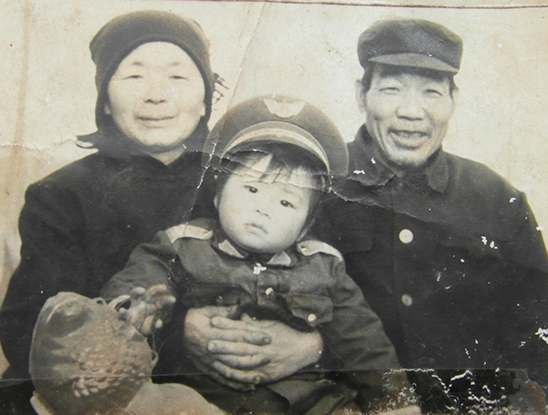
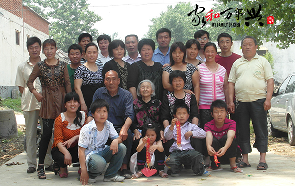
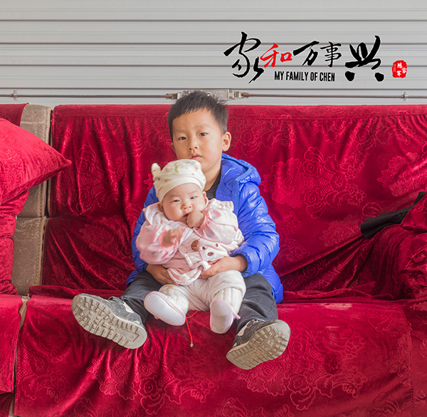

给全家人的一封信
最近长辈们家庭矛盾颇多,我也想发表一下自己的看法
还有一些人为了打着我爷爷的旗号,调拨我爸妈和我四姑的矛盾.虽然我爷爷是我这辈子最爱的人,但是爱归爱,对错归对错.我觉得我爷爷这辈子做的重要决定几乎都是 错误的:
1.跟着xx党的号召走,挖沼气池,盖拱形顶房子,盖塑料大棚,造成家庭外债累累,每个女儿除了还账还要承担沉重的体力劳动,每个人都受尽了痛苦.至于谁为家庭付出了更多,体验了更多的痛苦,我觉得每个人都相当.
2.为了被人"看得起",为了"争口气",不顾女儿们的幸福强制倒插门招女婿,还声明只要肯倒插门的男人就把自己女儿嫁给她,造成一代到两代人的痛苦.我自己也饱受上一代的婚姻悲剧的影响,至今仍觉得婚姻是一件极度痛苦的事,非常怕结婚.
3.不允许分家,还造成一个女儿 喝药自杀,我妈抢救及时,救了那个人一命.
4.我爷和我爸妈交换房子住,我爸妈当时为了孝敬爷爷,也有迫于爷爷压力的成分,把后院的新房子让给爷爷住.后来我爷爷又没有经过我爸妈的同意,办了房产证.我猜测爷爷之所以这样做的目的是防止我爸妈以后索要自己的房子,当时四姑是最小的孩子,才几岁,爷爷就把房产证的持有者名字定为我四姑.从法律上讲宅基地是公有制,属于国家所用,由村委会分配,不是长辈的私产,长辈没有权利和儿女交换房子.错误的决定也造就了现在的家庭矛盾.
各人的想法
通过从上一代人以及我奶奶那里了解到情况,我觉得这个矛盾可以解决:
我爸的想法:
我爸是真心想住到后院,他觉得这样离两家的老人都近,可以方便照顾,二是觉得后院热闹,我爸是一个喜欢热闹的人,他想在在一个热闹的地方颐养天年.
我妈的想法:
我妈我点迷信,觉得我爷爷和我爸爸得了神经病和住宅有关系,不愿意再住前院,我觉得是无稽之谈,只是个巧合我爷爷神经病病因是因为当年的文革批斗,当年被批斗疯的,被批斗死的人太多了,因为被批斗神经一点也不奇怪.我爸爸神经病的病因,是一个人去北京,遇到流氓团伙打架砍人,当时我爸一个人住在被流氓团伙包围房子里被吓到了,后来又受到了一系列的精神刺激. 他们神经时间都不在家和住宅没有任何关系
我四姑的想法:
我四姑觉得我爸妈要"撵走"她,觉得"窝囊"
我觉得两家的问题可以解决
我征求了我爸的意见,可以在后院不动我四姑的房子,盖房子的话只盖西边,这样我四姑就没有什么被"撵走"和"窝囊"的感觉,而且我四姑漯河和广东都有房子,几乎没有在家住的可能,也不存在住在家住看到我爸妈觉得"窝囊"的情况
不要让调拨离间的人得逞:
还有人趁这种机会调拨我爸妈和我四姑两家人的矛盾,持着看笑话,拉偏架的心理用非常恶毒的话辱骂我妈.我小的时间不懂事打过这个人两次,这些年我一直觉得打了长辈后悔和内疚. 如果是恨我可以冲我来,拿到棍子打我都行,我只是不希望连累我妈,她60岁了,脑血管堵塞,经常头晕,我怕她中风
家和才能万事兴
和为贵 ，人没有十全十美的。家和；一家人相亲相爱，乐融融。只有家庭稳定，才能有心思，有精力，有信心去做其他的事。家和就像房子的地基，地基稳，房子才能经历风雨，才你能遮风挡雨。家和了，其余的困难，问题，都已经无所谓了。有了和睦的家，才会信心满满的去实现理想，去迎接明天。家和万事兴
